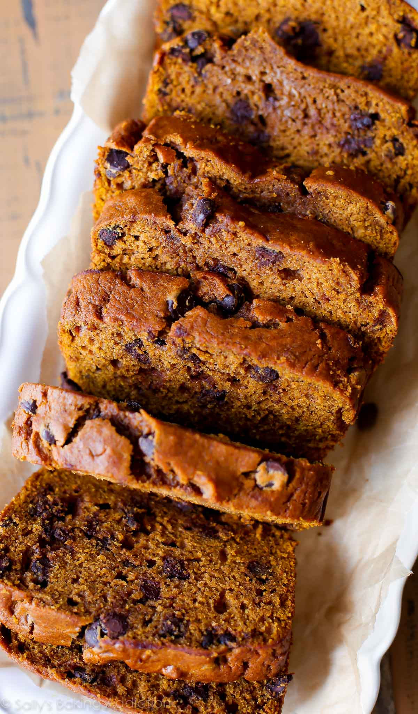

Pumpkin Bread

Homemade pumpkin bread is a favorite fall recipe packed with sweet cinnamon spice,
tons of pumpkin flavor, and optional chocolate chips.
Ingredients
- flour
- baking soda
- cinnamon
- nutmeg
- cloves
- ginger
- etc...
Steps
- Adjust the oven rack to the lower third position and preheat the oven to 350°F (177°C). Lowering the oven rack prevents the top of your bread from browning too much, too soon. Grease a metal 9×5-inch loaf pan with non-stick spray. Set aside.
- In a large bowl, whisk the flour, baking soda, cinnamon, nutmeg, cloves, ginger, and salt together until combined. Set aside. In a medium bowl, whisk the eggs, granulated sugar, and brown sugar together until combined. Whisk in the pumpkin, oil, and orange juice. Pour these wet ingredients into the dry ingredients and gently mix together using a rubber spatula or a wooden spoon. There will be a few lumps. Do not over-mix. Gently fold in the chocolate chips, if including.
- etc....